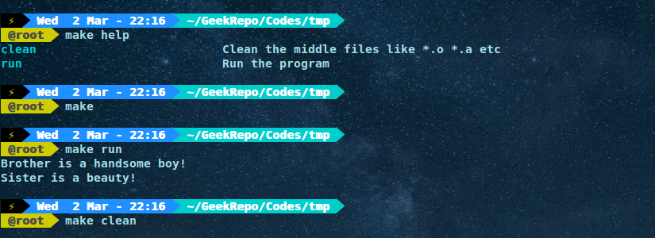

目录概览:
0x01.静态库的编译和使用
0x02.动态库的编译和使用
0x03.动态共享库显式调用
...........1.C语言动态库的显式调用
...........2.C++语言动态库的显式调用
Linux下的库大致有两种,分别是静态库和动态共享库.本片文章将会介绍这两种库的编译以及运行.
0x01.静态库的编译和使用
环境为Ubuntu 14.04 x64,Linux下的静态库通常以.a为后缀,用于创建.a的工具为ar(archive的缩写).静态库链接后会将所有数据会添加到调用程序,
因此使用静态库的程序体积可能较大,但是使用静态库的程序不需要外部依赖项.
下面我们需要用到四个文件,如下所示:
├── libsrc.cpp
├── libhdr.h
├── caller.cpp
└── makefile
代码分别如下:
//libsrc.cpp
#include<iostream>
using namespace std;
void brother()
{
cout<<"Brother is a handsome boy!"<<endl;
}
void sister()
{
cout<<"Sister is a beauty!"<<endl;
}
//libhdr.h
#ifndef LIBHDR
#define LIBHDR
void brother();
void sister();
#endif
//caller.cpp
#include "libhdr.h"
int main()
{
brother();
sister();
return 0;
}
#makefile
app:caller.cpp libstatic.a
@g++ -o app caller.cpp -I. -L. -lstatic
libstatic.a:libsrc.o
@ar rcs libstatic.a libsrc.o
libsrc.o:libsrc.cpp
@g++ -c libsrc.cpp
clean:## Clean the middle files like *.o *.a etc
@-rm *.o *.a app
run: ## Run the program
@./app
.PHONY:help
help:
@grep -E '^[a-zA-Z_-]+:.*?## .*$$' $(MAKEFILE_LIST) | sort | awk 'BEGIN {FS = ":.*?## "}; {printf "\033[36m%-30s\033[0m %s\n", $$1, $$2}'
说明如下:
- 编写库libstatic.a的源码文件libsrc.cpp:
- 将libsrc.cpp编译为libsrc.o文件:g++ -c libsrc.cpp
- 生成库文件libstatic.a:ar rcs libstatic.a libsrc.o
- 编写头文件libhdr.h,包含所有库中的函数原型.
- 编写调用程序caller.cpp,包括库的头文件,并调用库函数
- 写makefile自动化编译运行
其中的makefile可以使用make help来查看帮助,make来生成可执行程序,make run来运行程序,如下图所示:

其中make help很有用处,具体可以见参考链接2.
0x02.动态库的编译和使用
只需更改makefile如下即可:
#makefile
app:caller.cpp libshared.so
@g++ caller.cpp -o app -L. -lshared
@echo You can type \"make run\" to run the program.
libshared.so:libsrc.cpp
@g++ -fPIC -shared -o libshared.so libsrc.cpp
clean:## Clean the middle files like *.o *.a etc
@-rm *.o *.a *.so app
@echo Clean Done!
run: ## Run the program
@echo Run the program..
@LD_LIBRARY_PATH=.:$LD_LIBRARY_PATH ./app
.PHONY:help
help:
@grep -E '^[a-zA-Z_-]+:.*?## .*$$' $(MAKEFILE_LIST) | sort | awk 'BEGIN {FS = ":.*?## "}; {printf "\033[36m%-30s\033[0m %s\n", $$1, $$2}'
主要有两个地方需要说明:
1.编译生成.so库的命令为:g++ -fPIC -shared -o libshared.so libsrc.cpp,其中的-fPIC表示编译位置无关代码(Position Independent Code),
shared指明是生成动态链接库.
2.程序运行所需要的库,其默认的搜索路径一般为LD_LIBRARY_PATH所指定的路径,然后是/etc/ld.so.cache,再然后是/lib/和/usr/lib/.
这里我使用了设置环境变量LD_LIBRARY_PATH的方法.更多的方法可以参考链接3.
0x03.动态共享库显式调用
上述讲述的静态库和动态库都属于隐式调用.还有一种方式是显式调用.静态库因为直接"打包"到了程序中,因此显式调用是没有意义的.
动态共享库由于是在需要时才加载,所以往往是在需要的时候动态调用.
1.C语言动态库的显式调用
C语言动态库的显示调用很简单.
头文件dlfcn.h提供了下面几个接口:
函数以指定模式打开指定的动态连接库文件,并返回一个句柄给调用进程
void * dlopen( const char * pathname, int mode )
dlsym根据动态链接库操作句柄(pHandle)与符号(symbol),返回符号对应的地址.使用这个函数不但可以获取函数地址,也可以获取变量地址.
void* dlsym(void* handle,const char* symbol)
dlclose用于关闭指定句柄的动态链接库,只有当此动态链接库的使用计数为0时,才会真正被系统卸载.
int dlclose (void *handle)
当动态链接库操作函数执行失败时,dlerror可以返回出错信息,返回值为NULL时表示操作函数执行成功.
const char *dlerror(void)
下面是一套针对C语言编写的源码调用.
//libsrc.c
#include <stdio.h>
void brother()
{
printf("Brother is a handsome boy!\n");
}
//libhdr.h
#ifndef LIBHDR
#define LIBHDR
void brother();
#endif
//caller.c
#include <dlfcn.h>
#include "libhdr.h"
int main()
{
//函数指针声明
void (*bro)();
//句柄
void *handle = dlopen("./libshared.so", RTLD_LAZY);
//获取函数指针
bro = dlsym(handle, "brother");
//调用函数
(*bro)();
//释放
dlclose(handle);
return 0;
}
#makefile
app:caller.c libshared.so
@gcc -rdynamic -o app caller.c -ldl
@echo You can type \"make run\" to run the program.
libshared.so:libsrc.c
@gcc -fPIC -shared -o libshared.so libsrc.c
clean:## Clean the middle files like *.o *.a etc
@-rm *.o *.a *.so app
@echo Clean Done!
run: ## Run the program
@echo Run the program..
@./app
.PHONY:help
help:
@grep -E '^[a-zA-Z_-]+:.*?## .*$$' $(MAKEFILE_LIST) | sort | awk 'BEGIN {FS = ":.*?## "}; {printf "\033[36m%-30s\033[0m %s\n", $$1, $$2}'
其中有几个地方需要注意:
- 调用函数应该加入头文件dlfcn.h
- dlopen函数应该传入动态共享库的相对或者绝对路径,不需要额外设置库环境变量
- 主要的编译命令为:gcc -rdynamic -o app caller.c -ldl
2.C++语言动态库的显式调用
由于没有专门针对C++语言动态库显示调用的API,因此还须借助为C语言提供的API,因此这就导致C++库代码的编写略为复杂.
解决方法是使用extern "C",这是C++中的关键字,用于声明C语言绑定的函数.这意味这只有非成员函数可以用此法来声明,因为它们不能重载.
使用这种方法后,C++中的函数名将会被作为符号名使用(C语言就是这样).通常地,我们就使用这种方法来用C++写动态库.
1)第一个例子是加载函数,如下:
//libsrc.cpp
#include<iostream>
using namespace std;
extern "C" void brother()
{
cout<<"Brother is a handsome boy!"<<endl;
}
extern "C" void sister()
{
cout<<"Sister is a beauty!"<<endl;
}
//libhdr.h
#ifndef LIBHDR
#define LIBHDR
#ifdef __cplusplus
extern "C" {
#endif
void brother();
void sister();
#ifdef __cplusplus
}
#endif
#endif
//caller.cpp
#include <dlfcn.h>
#include "libhdr.h"
int main()
{
//函数指针声明
void (*brother)();
void (*sister)();
//句柄
void *handle = dlopen("./libshared.so", RTLD_LAZY);
//获取函数指针
brother = dlsym(handle, "brother");
sister = dlsym(handle, "sister");
//调用函数
sister();
brother();
//释放
dlclose(handle);
return 0;
}
#makefile
app:caller.cpp libshared.so
@g++ -rdynamic caller.cpp -o app -ldl
@echo You can type \"make run\" to run the program.
libshared.so:libsrc.cpp
@gcc -fPIC -shared -o libshared.so libsrc.cpp
clean:## Clean the middle files like *.o *.a etc
@-rm *.o *.a *.so app
@echo Clean Done!
run: ## Run the program
@echo Run the program..
@./app
.PHONY:help
help:
@grep -E '^[a-zA-Z_-]+:.*?## .*$$' $(MAKEFILE_LIST) | sort | awk 'BEGIN {FS = ":.*?## "}; {printf "\033[36m%-30s\033[0m %s\n", $$1, $$2}'
其中的几点注意事项如下:
- 编译动态库仍然是使用gcc,虽然我们是C++源码,编译调用动态库的程序建议使用g++
- extern "C"关键字的使用,其中libsrc.h中的写法具有参照意义,因为这样的头文件既可以用于C++源码也可以用于C源码
- extern "C"有两种形式:
第一种是extern "C" 变量或函数声明,第二种是另外就是extern "C"｛函数或变量声明｝.
第一种形式(inline form)表示同时声明为外部连接和C风格连接,而第二种形式仅声明为C风格连接(并不附带外部声明).例如:
//第一种形式
extern "C" int foo; //外部变量声明并且C风格连接
extern "C" void bar(); //外部函数声明并且C风格连接,此时就不能为static
//第二种形式
extern "C"
{
int foo; //C风格连接,并且定义变量(不是外部连接声明!)
void bar();
}
//当将第二种形式改写成如下形式时,第一二两种形式才具有等价性:
extern "C"
{
extern int foo; //这儿的extern声明其作用对象为外部连接
extern void bar();
}
- 对于有extern "C"声明的函数,其作用只是改变了函数的连接形式(采用C风格,即在目标文件中的符号名与函数名相同),
并非改变函数的性质(也就是说被修饰的C++函数还可照常使用C++语言特性,与一般的C++函数除了多了个修饰之外,从外表上看并没有其它区别)
2)第二个是加载C++中的类:
由于类定义在可执行程序中,我们不能使用new来实例化一个类,但我们可以通过C++的多态来解决这个问题.
首先我们定义一个带有虚成员的接口类,然后定义一个实现了其虚成员的衍生类.
这里使用C++ dlopen mini HOWTO中用到的代码.
如下所示:
//triangle.cpp:
#include "polygon.hpp"
#include <cmath>
class triangle : public polygon
{
public:
virtual double area() const
{
return side_length_ * side_length_ * sqrt(3) / 2;
}
};
// the class factories
extern "C" polygon* create()
{
return new triangle;
}
extern "C" void destroy(polygon* p)
{
delete p;
}
// polygon.hpp:
#ifndef POLYGON_HPP
#define POLYGON_HPP
class polygon
{
protected:
double side_length_;
public:
polygon() : side_length_(0) {}
virtual ~polygon() {}
void set_side_length(double side_length)
{
side_length_ = side_length;
}
virtual double area() const = 0;
};
// the types of the class factories
typedef polygon* create_t();
typedef void destroy_t(polygon*);
#endif
//main.cpp:
#include "polygon.hpp"
#include <iostream>
#include <dlfcn.h>
int main()
{
using std::cout;
using std::cerr;
// load the triangle library
void* triangle = dlopen("./triangle.so", RTLD_LAZY);
if (!triangle)
{
cerr << "Cannot load library: " << dlerror() << '\n';
return 1;
}
// reset errors
dlerror();
// load the symbols
create_t* create_triangle = (create_t*) dlsym(triangle, "create");
const char* dlsym_error = dlerror();
if (dlsym_error)
{
cerr << "Cannot load symbol create: " << dlsym_error << '\n';
return 1;
}
destroy_t* destroy_triangle = (destroy_t*) dlsym(triangle, "destroy");
dlsym_error = dlerror();
if (dlsym_error)
{
cerr << "Cannot load symbol destroy: " << dlsym_error << '\n';
return 1;
}
// create an instance of the class
polygon* poly = create_triangle();
// use the class
poly->set_side_length(7);
cout << "The area is: " << poly->area() << '\n';
// destroy the class
destroy_triangle(poly);
// unload the triangle library
dlclose(triangle);
}
#makefile
app:main.cpp triangle.so
@g++ -rdynamic main.cpp -o app -ldl
@echo You can type \"make run\" to run the program.
triangle.so:triangle.cpp
@gcc -fPIC -shared -o triangle.so triangle.cpp
clean:## Clean the middle files like *.o *.a etc
@-rm *.o *.a *.so app
@echo Clean Done!
run: ## Run the program
@echo Run the program..
@./app
.PHONY:help
help:
@grep -E '^[a-zA-Z_-]+:.*?## .*$$' $(MAKEFILE_LIST) | sort | awk 'BEGIN {FS = ":.*?## "}; {printf "\033[36m%-30s\033[0m %s\n", $$1, $$2}'
需要注意的事项如下:
- 你必须同时提供创建与销毁示例的函数,不能直接使用delete释放实例
- 接口类的析构函数必须是虚函数
- 如果你的基类不需要析构器,那么你需要定义一个空的虚的析构器
References:
- http://www.dwheeler.com/program-library/Program-Library-HOWTO/x26.html
- http://marmelab.com/blog/2016/02/29/auto-documented-makefile.html
- http://www.dwheeler.com/program-library/Program-Library-HOWTO/x36.html
- http://www.cnblogs.com/skynet/p/3372855.html
- http://www.yolinux.com/TUTORIALS/LibraryArchives-StaticAndDynamic.html
- http://tldp.org/HOWTO/C++-dlopen/thesolution.html
- http://www.cnblogs.com/lichkingct/archive/2009/07/21/1527893.html